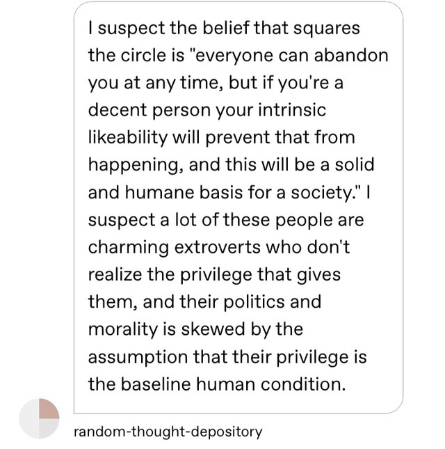

The sacred mystery of any deterrence theory is that it should stop me from doing something I would otherwise do. If I claim that I am a typical person wrt this enforcement system, yet I would never do the Bad Thing, and if any circumstance that could push me to doing the Bad Thing wouldn’t be stopped by the deterrence, then what use is this punishment? It must only have in mind a vanishingly small portion of the populace.
Yet if I do admit “I would do the bad thing except for the threat levied here”, well uh, all of a sudden I would be treated as a degenerate and dangerous. Who can trust anyone that would murder you in your sleep, if they could get away with it?
I think a lot of people WOULD tell you that it’s only a small portion of the population they need to deter. I don’t know if they’re right to argue that, but I think they would bite that bullet.
the fact that millions of murderers in the 20th century were technically legitimate and thus never punished due to the fact that they were wearing uniform at the time suggests that morality is much more contingent on social context than we might naively expect, and that maintaining strong norms against murder is actually a relatively recent social technology that not all societies have and it is worth preserving it.
So in other words, “If I were not raised in this murder-hating society, and if I thought I could get away with it, then I would murder”.
Yes, but that’s a needlessly obtuse way to frame it.
Someone who lives in a peaceful and supportive community, who has a remunerative job that isn’t too awful, who has a family that loves him, will very likely never once consider turning to murder. That same guy, in the counterfactual world where he lives in a dangerous slum where only violent criminals prosper, working a back-breaking job for barely enough to survive, might well consider turning to murder. But, uh, he’s probably not sitting around contemplating the personality and the incentives of his counterfactual self. People usually don’t.
**********
The actual effective response here is something like:
Have you ever been to a place where there are no police? Deterrence sure seems to be doing something, at least on the macro level.
Which is not actually a surprise. If you’re contemplating a model of human nature in which everyone would immediately turn to violent savagery if it weren’t for the immediate deterrent effect of the law, then yes, you will rightly conclude that it’s very stupid. But the deterrent effect of the law is enough to make a bunch of people, on the margins, somewhat less actively criminal than they would have been otherwise. And the absence of those people’s criminal behavior is enough to make other people less criminal than they would be in a counterfactual more-criminal world. Etc. This is an actual domino effect.
Also known as “how can we build norms that stick?” in other contexts.
Yeah but that’s because “preventing murder from being a viable way to get what you want” is very different from the bloody-glee that is known as deterrence. If any time you commit a crime, something happens, the fruits of it are taken from you, you have to go through an investigation and a trial and at the end make restitution, then people are less inclined to crimes. And that does seem to work! But doubling or tripling the punishment, so that in a game theoretic way rational people would now see the expected outcome is net negative, even if they’ll probably get away with it, does not work. No one thinks “oh, that’s ten years in jail, not just five years, well, nevermind.”
I would commit tax fraud if I believed no one would notice. But I believe the government would notice and it would almost certainly be ineffectual and cause me at least some hassle. I have no idea what the punishment is.
I mean, sure, OK, if that’s what you mean. But it feels like shadowboxing. Everyone I know who talks seriously about deterrence is on board with ideas like “reliable punishments have a strong deterrent effect even if they’re minor, enormous-but-inconsistent punishments have basically no deterrent effect.” If you’re using “deterrence” to mean “bloody glee solely focused on making punishments worse and worse,” well, I think you’re pretty close to speaking a private language in that regard.
The sacred mystery of any deterrence theory is that it should stop me from doing something I would otherwise do. If I claim that I am a typical person wrt this enforcement system, yet I would never do the Bad Thing, and if any circumstance that could push me to doing the Bad Thing wouldn’t be stopped by the deterrence, then what use is this punishment? It must only have in mind a vanishingly small portion of the populace.
Yet if I do admit “I would do the bad thing except for the threat levied here”, well uh, all of a sudden I would be treated as a degenerate and dangerous. Who can trust anyone that would murder you in your sleep, if they could get away with it?
I think a lot of people WOULD tell you that it’s only a small portion of the population they need to deter. I don’t know if they’re right to argue that, but I think they would bite that bullet.
the fact that millions of murderers in the 20th century were technically legitimate and thus never punished due to the fact that they were wearing uniform at the time suggests that morality is much more contingent on social context than we might naively expect, and that maintaining strong norms against murder is actually a relatively recent social technology that not all societies have and it is worth preserving it.
So in other words, “If I were not raised in this murder-hating society, and if I thought I could get away with it, then I would murder”.
Yes, but that’s a needlessly obtuse way to frame it.
Someone who lives in a peaceful and supportive community, who has a remunerative job that isn’t too awful, who has a family that loves him, will very likely never once consider turning to murder. That same guy, in the counterfactual world where he lives in a dangerous slum where only violent criminals prosper, working a back-breaking job for barely enough to survive, might well consider turning to murder. But, uh, he’s probably not sitting around contemplating the personality and the incentives of his counterfactual self. People usually don’t.
**********
The actual effective response here is something like:
Have you ever been to a place where there are no police? Deterrence sure seems to be doing something, at least on the macro level.
Which is not actually a surprise. If you’re contemplating a model of human nature in which everyone would immediately turn to violent savagery if it weren’t for the immediate deterrent effect of the law, then yes, you will rightly conclude that it’s very stupid. But the deterrent effect of the law is enough to make a bunch of people, on the margins, somewhat less actively criminal than they would have been otherwise. And the absence of those people’s criminal behavior is enough to make other people less criminal than they would be in a counterfactual more-criminal world. Etc. This is an actual domino effect.
Also known as “how can we build norms that stick?” in other contexts.
(1) People are different. They have different needs from each other. Any standardized model of the Good Life will be toxically horrible for some people, no matter what that model is. For that matter, a life model that you find disgusting and awful is probably Exactly Perfect for some people. Even if you really need X, even if you think most people need X, some people need Y instead.
(2) People are not always good at understanding their own needs. Sometimes they want things that are bad for them. In particular, it often happens that some particular thing is widely desired but actually harmful in the modal case, because for some reason it’s “more attractive than it should be.” (Maybe it offers short-term rewards for steep long-term costs, screwing with common introspective failures relating to time. Maybe it offers a slim chance at fabulous payouts, screwing with common cognitive failures relating to probability. Maybe it plugs into some widely-valorized social narrative, in a way that disguises its real ongoing costs.) Sometimes it’s the case that most people really do need X, only a very few strange people need Y, but nonetheless there are many who will end up choosing Y over X if they have the autonomy to do so.
In such cases, there are concrete dangers to the pure liberal stance; autonomous people acting freely are likely to hurt themselves. You can end up concluding that the costs of liberty outweigh the costs of paternalism, or vice versa, but it’s an actual tradeoff.
it’s sort of amusing that humans invented polytheism, monotheism, atheism, in that order.
Did we tho? I mean, Judaism’s been around for like almost 6000 years hasn’t it? I’m hard pressed to think of a religion that predates that, the mesopotamian, egyptian, and indus valley civilizations were more like contemporaries I thought. And prior to that wasn’t it more like animism than polytheism?
Judaism’s been around for like almost 6000 years hasn’t it
Ah 6000 years, as old as the Earth then.
More seriously though, I was brought to believe that that’s not really true. Historical records of Israel don’t go further back than the 13th century BCE and scholars seem to have charted a progression with the ancient Israelite religion from polytheism, possibly to monolatrism, then to monotheism, with strict monotheism possibly emerging around 6BCE (a.k.a. the Second Temple Period).
Rabbinic Judaism certainly isn’t older than about 1500 years. Judaism qua Judaism, i.e., a distinct religion which strongly differentiated itself on more than ethnic lines from those around it, formed about the period of the Babylonian Captivity, when the need to create a stable Jewish identity in a foreign land became important. (But religions aren’t static, and this religion was different in important ways from later, rabbinic Judaism.) Post-Exile is also when the religion of Israel became distinctly monotheistic; monotheism/monolatrism had originally been a minority view within the ancient Hebrew religion. El, one of the prototypes of God as found in Judaism, was a major Canaanite deity, the consort of Asherah, later merged with Yahweh. The background of the ancient Hebrew religion is fairly ordinary Semitic polytheism, it’s just that for unique historical reasons the national god of Israel has had a lot more staying power than Chemosh, Milcom, or Quas.
I was going to question this on the grounds that pretty much every single religion seems to have strong tendencies in both directions. The “monotheistic” religions separate their god out into numerous components and intercessors and powers, and the “polytheistic” religions quite often (Always?) seem to have notable traditions insisting that all the different gods are simply expressions of one singular godhead.
Many Aztec philosophers and priests believed that the Gods were all expressions of one unified godhead; their religion is “polytheistic”.
The Christians say the same about the Father, Son and Holy Ghost, their religion is “monotheistic”.
I’d like to see evidence that one of these traditions actually predates the other.
Monotheism, in the modern sense of the term, doesn’t show up before the Axial Age. You don’t even have the right philosophical ingredients available.
You can find instances of henotheism from way back when, if that matters to you. “Our god is the best god, we worship only him, accept no substitutes” is not a difficult idea to generate.
But a monotheistic god is a different sort of creature, conceptually, from “a pagan polytheistic god except that there’s only one in existence.” A monotheistic god is not just, like, a superpowered prayer-answering wizard who lives on a mountain somewhere. A monotheistic god is necessarily part of the system of the world. (This is true whether or not you buy into omnipotence, omniscience, perfect goodness, any of that Ultimate Stuff – although it’s not an accident that monotheists keep being drawn to Ultimate Stuff.) Monotheism implies that at least certain things work the same everywhere, that godliness is connected to some kind of universal existential truth that can be studied and understood.
And, surprise surprise, monotheism-in-the-modern-sense appears at right about the time when people start asking big philosophical questions about universal truths. Which is basically the same time across, at least, Eurasia.
the annoying thing about all the US gun control debates is that everybody wants to come up with a single gun policy that can be seamlessly applied to both a person who lives in a cabin 100 miles from the nearest city and one who lives downtown in a major metropolis and that is not realistic
Except…there’s a reason for that, right?
The US is a single country with a single economy. Our government goes to a lot of pains to ensure that this is true. And so long as you can drive a pickup truck from the sticks to the metropolis without having to go through a guarded checkpoint, the rules in the single-most-lax gun control regime in America will be functionally the rules for all of America. You can’t allow something to be bought and sold in Place A without there being a fully-supplied market for it in Place B, unless you impose commerce controls, and we are 100% unwilling to do that.
See also: drugs and fireworks.
**********
On a semi-related note, it’s worth remembering that while the recent dust-ups could be cast as “the interests of rural America vs. the interests of urban America”…they are not actually that thing, at least not in a material sense. The driving gun control issue isn’t (e.g.) “criminal organizations do criminal things with guns in our cities,” it’s “there are mass shootings,” and the mass shootings haven’t been particularly limited to urban areas.
Demographic transition (n.): the observed/posited phenomenon whereby, as they approach industrialized-first-world levels of wealth and technology, populations start having fewer and fewer children until their fertility rates are at replacement or sub-replacement levels.
Often cited by futurists as an indication that overpopulation is unlikely to be the doom of the human race. Often cited by traditionalist conservatives as an indication that something is dreadfully wrong with modernity.
The demographic transition isn’t going to be enough to save us, in the long term, if there are any true-breeding populations of humans who are immune to it.
So – just checking, because it seems like I might be missing something somewhere –
– solitary confinement doesn’t actually have to be the kind of monstrous soul-destroying torture that it presently is, right?
I mean, yes, humans are social creatures, one way or another you will go
mad if you’re denied human company for long enough, I don’t want to
underplay that. But there’s a big difference between “you are denied
human company” and “you are denied human company, and also any other
form of mental stimulation, while being kept in a tiny lightless metal
box.”
If you really have to keep a prisoner away from everyone
else, for reasons of his safety or other people’s safety or whatever, it
seems like Step 1 in terms of mitigating the problems with this
scenario would be giving him some fucking books to read.
…you do understand that “The Fun Thing, but gay / trans / sexually quirky” is metaculturally parallel to “The Fun Thing, but Christian,” right? Like, from the outside, it is exactly the same phenomenon.
This insight applies in both directions, of course.
I thought “fun thing, but Christian” was more of a thing to give to your kids who want the real deal?
If people are doing Christian headcanons and drawing what type of rosary they think their favorite character would use and stuff that seems much more reasonable.
…and if you think there aren’t parents right now who are replacing their children’s beloved Scandalously Oppressive Kyriarchal Media with Nice Wholesome Queer Media of approximately the same kind, well, I’ll bet you half a dollar that you’re very wrong.
Seriously, though, Christian rock isn’t just for censorious parents. It’s also for people who want to like rock, or want to have rock, but either (a) can’t get past the cultural boundaries between themselves and Normal Rock Culture or (b) just can’t bring themselves to really like anything unless it plays directly into their religious hobbyhorses. And you get precisely the same dynamics with wokeness / queerness / what-have-you.
**********
I wasn’t particularly talking about headcanons and fanfic etc., although I can see how you got there. More, uh, the alleged infiltration of Woke Shit into random cultural outlets, like (to pick an example completely at random) outdoorsmen’s magazines.
…you do understand that “The Fun Thing, but gay / trans / sexually quirky” is metaculturally parallel to “The Fun Thing, but Christian,” right? Like, from the outside, it is exactly the same phenomenon.
This insight applies in both directions, of course.
Your ideology – if it gets off the ground at all – will start off with a core base of natural true believers. These are the people for whom the ideology is made. Unless it’s totally artificial, they are the people by whom the ideology is made. It serves their psychological needs; it’s compatible with their temperaments; it plays to their interests and preferences. They’re easy to recruit, because you’re offering something that’s pretty much tailor-made for them.
This is the level at which ideological movements are the most diverse, in terms of human qualities. Natural true believers are heavily selected, and different movements select for different things. A natural true radical feminist is a very different creature from a natural true fascist, and neither of them looks very much like a natural true Hastur cultist.
Life in a baby movement, populated entirely (or almost entirely) by natural true believers, can be pretty sweet. You may not necessarily be getting a lot done, but you’re surrounded by kindred spirits, and that’s worth a lot by itself.
One of the most common ideological failure modes involves imagining that expansion is tantamount to “transforming outsiders into natural true believers.” It’s not. The population of natural true believers is a limited and precious resource, and while it’s theoretically possible to make more…if you have some truly gifted cultural engineers…it’s a difficult, costly, and failure-prone process at the best of times. It doesn’t work at scale.
You can grow, but the growth process necessarily involves attracting other kinds of people to your ideology. And then it won’t be the same.
Success, I think, requires some understanding of what growth is actually going to bring you, and being able to roll with those changes.
**********
The first outsiders to flock to your banner will be the perpetual seekers – or, to put it less charitably, the serial converters. These are the hipsters and connoisseurs of belief, the people who join movements because they really like joining movements.
They’ll think that you and your doctrines are amazing, at least for a little while. They’re primed for that. But they get bored easily, and they like chasing after the high of new epiphanies. Unless you figure out how to hold their attention in a sustained way, which requires constant work, they’ll drift off.
This is the second-most-common way for a movement to die (after “never really getting anywhere in the first place”). You attract a few interested seekers, but not enough of them to give you a foothold in less-accessible demographics, and after a while they just give up and move on. If you’re lucky, they leave you with something like the original core of natural true believers, sadder but wiser after their experience trying to go big. If you’re unlucky, they cause lots of drama and shred everything on the way out.
These guys can be very annoying to natural true believers, but if you want to expand, you 100% absolutely need them. If you’re smart, you’ll take precautions to make sure they don’t walk off with key pieces of your infrastructure.
**********
If you display some serious growth potential, you start getting the profiteers, who don’t much care about your doctrine or your happy vibe but do care about that growth potential. These are people who see your movement as a vehicle for their private ambitions, who want to sell you to the world and ride you all the way to the top.
…I’ve used some mercantile language here, but they’re not necessarily merchants trying to get rich, although that’s the prototype case I have in mind. They may be going for political power, or simple fame, or all sorts of things. Whatever it is they want, they think that you can help them get it, because your star is rising.
In the long term, even the medium term, the profiteers can utterly wreck you if you’re not careful. They tend to amass a lot of movement-internal power very fast, because they have big plans, and they promise concrete rewards quick. But they usually don’t get whatever-it-is that the movement is really about, and even if they do get it, they don’t care as much as you do. Their instinct is to make your Whole Thing as bland and generic and palatable as they can, so that they can sell it to the widest possible consumer base in the shortest possible timeframe. This is a miserable and degrading experience, of course, but it’s also bad strategy in an eating-your-seed-corn kind of way. The world gets a constant stream of bland generic palatable Hot New Things, and it chews through them fast. There’s a future in being something genuinely weird enough to change the world; there’s no future in being last year’s fad. The profiteers, however, aren’t interested in being careful shepherds of your movement’s power and credibility. The arc of an individual’s career is not that long. Consciously or otherwise, they are happy to burn you up as fuel for themselves.
In the short term, the profiteers are super awesome. They will work tirelessly to help your movement grow, and they will do so in a very effective and practical-minded sort of way, without getting bogged down in the dysfunctions and the arcane abstract concerns that (probably) dominate your natural true believers.
Yes – these first three groups map roughly onto the geeks, MOPs, and sociopaths of that one Meaningness essay. There’s a lot of applicable insight in there. It’s important, however, that if your group is built around a serious ideology rather than a consumable toy, standard-issue Members of the Public aren’t going to come flocking to you during these early stages. Members of the Public don’t adopt new ideologies that easily. Your weirdos will be able to attract only other, different kinds of weirdos.
**********
Close on the heels of the profiteers, you will get the exploiters. Where the profiteers are trying to sell you to the world, the exploiters are trying to sell themselves to you; where the profiteers are trying to make your movement grow (for their own purposes), the exploiters see you as an environment that’s already big enough for them to thrive in it.
Some of them are hucksters and con artists. Some of them are, yes, sexual predators in the classic mold, going after a known population of unusually-naive unusually-vulnerable people who let their guard down around anyone speaking the right shibboleths. (That describes pretty much any ideological movement at this stage. Sorry.)
And some of them are just lonely people desperate to belong to something, who think that they’ve found your movement’s cheat codes for belonging. Some of them are fetishist-types who don’t have the whatever-it-takes to be one of your natural true believers, but who admire or desire that thing, and hope that they can be around their favorite people and get a Your Movement GF or whatever.
Often they’ll be harmless. Sometimes they really, really, really won’t. There will be more of them than you expect.
At the very least, they’re a marker of success. Apparently you’re worth exploiting!
**********
You’ll know that you’ve really made it, as a movement, when you start getting the fifth wave of converts: the status-mongers. They’re joining up with you because they think it will be good for their social lives or their careers – not in an “I’m going to be the guy who gets rich off of this” kind of way, but in a much lower-key “this makes me look cool or smart or moral, this is good for my reputation” kind of way. They want the generic approval that comes from being on the forefront of the zeitgeist, and apparently the forefront of the zeitgeist is where you are, now. Congratulations.
The arrival of the status-mongers represents a crisis point for your ideology. There will be a lot of them; they’ll soon outnumber all your other people by an order of magnitude or more. (Status-mongers attract more status-mongers, as each one makes it clearer to the world-at-large that your ideology is in fact cool.) They will become the general public’s image of your movement, whether you like it or not. Most of them definitely will not get your Whole Thing, not really. They are interested mostly in being comfortable, in showing off to unenlightened mainstream audiences, and in using your doctrine as a cudgel to beat on their personal rivals.
At this point you don’t really have to fear disappearing into obscurity, but you’re in more danger than ever of losing your way and becoming something totally alien. The status-mongers will be doing their level best to make that happen. You will also start attracting enemies far more powerful and dangerous than any you’ve known before. Anything truly popular and high-status represents a threat to someone big. You need to start prepping for persecution, culture war, and other varieties of large-scale social conflict.
**********
If you can weather all that and come out on top, you finally get the sixth wave of converts, the big prize: the normies. People will join your movement because that’s what everyone else is doing, because that’s what they’ve been taught, because they don’t want to stand out or make waves, because they don’t really care and you represent a plausible default.
Most of the people out there are normies.
That’s the endgame, the victory condition for an expansionist ideology: that you are the normies’ choice.
**********
These are the groups that are out there. This is what you’ll get, when you turn your gaze toward the path of growth. This, and not whatever visions of radical social transformation dance before your eyes when you look at your beloved allies who are just like you.
seeing tumblr take the obvious move towards “### people liked your post” kinda makes me understand those conservatives who are like “but surely any government powerful enough to ensure basic sanitation… is also powerful enough to EUTHANIZE ALL SENIOR CITIZENS?” a @staff competent enough to do notifications in a half-sensible way is perhaps also competent enough to “optimize” read order away from datetime-posted to inconsistent-reward skinnerboxing, &c.
The tumblr userbase is in an almost uniquely awkward situation, in the sense that the value we derive from the platform is largely predicated on the incompetence of its owners and managers. We’re pretty sure that they would eagerly make things much worse, if only they knew how, and (more importantly) that this is the default state of any platform in the present marketplace.
Sorta makes you wonder whether “sane, simple, privacy-respecting social media” is one of those projects that could soak up some billionaire philanthropy.
Massive subsidies / incentives for employers who make jobs fully remote. Massive enough to overcome all the whining about how it doesn’t work as well. Massive enough that basically no white-collar employee will ever step into an office.
Maybe this works in FIRE and web-land software where things are totally detached from reality?
I’m white collar in name only.
It also works in the mid-to-upper echelons of many otherwise-undifferentiated business and government institutions, even if they have front-line operations that are more concrete.
…there are obviously lots and lots of jobs where it just doesn’t work, like, at all. And, shrug, “white-collar” might not be the right differentiating term, I chose it kind of carelessly.
But there are a lot of jobs where it would work, at the cost of some vague marginal “our team isn’t as cohesive” or “people have to spend a little longer flailing around to find their feet” or something. (A lot of jobs that have already more-or-less acknowledged this, for that matter, and allowed people to work remotely in part – just not enough to, y’know, actually use that fact to make good lifestyle changes.)
These are real costs, but trivial ones in the face of all the benefits to be gained from an upper middle class that can physically disperse.
Massive subsidies / incentives for employers who make jobs fully remote. Massive enough to overcome all the whining about how it doesn’t work as well. Massive enough that basically no white-collar employee will ever step into an office.
All I can see, then, is that your position is “never try to change anything, because you *must* be wrong about the real cause of the problem.” And that does not seem like a very good or effective position to take, since unless the current order is in fact the best of all possible worlds, it means we’re doomed in a particularly horrible way.
Not especially!
…although, in fact, my social epistemics are perhaps a little more doom-y than what you’ll commonly find.
Sometimes, if you actually know something about the past, you can point to a particular time-and-place and say “look, they actually were better off than we are in X-and-such particular way, they had a solution to this problem we’re facing.”
And – more relevantly, by far – sometimes you can say “we’ve never yet been able to solve this problem, but I have ideas about how we might do so, and we should try out those ideas or at least explore them further.”
The thing about which I’m complaining is the reflexive reactionary itch that says “things are bad now, they can’t possibly always have been bad like this, therefore we should go back to The Way Things Were.”
The point is double-plus-relevant when you’re talking about social changes that amount to “bringing things out in the open.” How much did we have to deal with them, and possibly suffer from them, before we brought them out in the open? Well, you sure as fuck don’t actually know, do you?
I’m so mad that no job interview has ever asked me that question about what my greatest weakness is. I’ve had “music in the Dorian mode, tall men in dark suits, and anything combining the tastes of coffee and chocolate,” cocked and loaded for about a decade now, and I still can’t come to terms with the fact that I’ll never actually get to use it.
All my sympathies are with you.
…my go-to-that-I’ve-never-gotten-to-use is “if you flip me on my back, I can’t right myself.”
People who are into relationship anarchy tend to be the same people who are into communes and intentional communities and general resource-sharing. Which is fine on paper, but in practice, I’m skeptical that “everyone depends on everyone else for their basic needs” and “you can abandon anyone at any time” can ever be compatible positions. Surely they realize that any kind of communal living would require *more* interpersonal commitment, not less?

That’s the “charitable” “steelmanned” version of the idea.
The other version of the idea is something like:
The threat of being abandoned by the people on whom you’re dependent is the thing that keeps you on the straight-and-narrow path of decent behavior, and thus the glue that holds society together.
(The problem with atomized modernity is that small-scale personal politics don’t have enough coercive power; people are shits to each other because the only ones on whom they’re dependent, the only ones whom they really have to work to please, are their employers.)
This is of course the very worst idea, but if you scratch the surface I imagine you’ll find that it’s surprisingly popular.
As a reader, I like worldbuilding, even (and sometimes especially) the expository parts. I read SFF because it’s the genre that most delivers that. It feels actively annoying when I have to sit through Plot that I’ve seen a million times before to get to soak in a world that I haven’t, or even to look at (say) extruded D&D fantasy in fine everyday detail with new eyes.
I feel like this should be obvious, but I still see, pretty regularly, appeals to authors to stop so much worldbuilding and focus on what obviously really matters to presumed readers, the story. I’m sure there are plenty of readers for whom that’s true! Good for them! But it’s not universal and we’re living in a long-tail world. Unless you’re right on the edge of being able to write full-time and writing to market means the difference between having a day job or not, don’t let The Average Reader become a sort of imperative-issuing Big Other. I would guess there are many more readers who love baroque expository worldbuilding than there are people who are really into, I don’t know, mpreg werewolf fanfiction, but there’s a thriving audience for that and more power to them, so don’t let them hog all the fun!
Amen.
This can be applied more generally to showing-versus-telling, I think. If you’ve got something that’s more interesting than the beat-by-beat progression of your yarn, you should tell us about it, rather than slicing it up into little pieces and embedding those pieces in the unfolding plot.
…but then again, I read splatbooks for fun, so maybe I’m not the best person to ask.
…but I’m probably not the only one who does that kind of thing.
Your sense that something is profoundly wrong does, in fact, indicate that there’s probably some kind of problem somewhere. The problem might just be with you, the problem might be a giant-scale society-consuming nightmare, the problem might be anywhere in between, these things are not easy to untangle and our internal narratives often deceive us. In the end, though, we measure our success by human thriving. If things aren’t OK, then they aren’t OK. And you are as much a person as anyone else, and your private gauge of OK-ness is a thing that matters.
But – and this is important –
“There is a problem” does not mean “we have ever, in the history of humanity, solved that problem.”
Your sense that something is profoundly wrong is entirely consistent with that something having been profoundly wrong always, everywhere, for everyone…or with that something being a social technology that we developed in order to replace a situation that was (believe it or not) even worse.
I realize that I’m actually just repeating myself here, that I’ve made this exact point a hundred times. But it keeps on being pertinent. Humans are really really good at identifying sub-optimalities in their environments, and not at all good at making the correct comparisons to alternative possibilities. I understand the temptation to think that everything will be better if we just take away the Bad Thing, and the difficulty of embracing the idea that the Bad Thing is the best of all available options, or that we’ve never actually figured out how to take it away at all. Until you learn to do that, though, you’re going to be lost in a haze of meaningless antediluvian dreams.
When I was a kid and teenager, we didn’t have “Young Adult” per se. Teenage stuff I guess was pretty conservative, and mostly consumed by much younger kids. Stuff about high school was mostly interesting to 11 year olds?? In the 80s, what most young teenage girls seemed to actually be reading was Stephen King and V.C. Andrews. Teenagers *loved* that stuff. Maybe I just had liberal parents and so did my friends, idk - and I was a latchkey kid.
Adult horror, mystery, and true crime were big. And if we were geeks/nerds, our literature was usually in the adult section… adult sci fi and fantasy.
Do teens still even read adult material???
Reading was the *one* safe space lots of young people had to learn about sexuality and adult situations, other people, other cultures.
If adults didn’t approve of what we read, we read it anyway, and I think maybe Gen X teenagers didn’t have as much oversight or surveillance because of latchkey culture but also because there simply *weren’t as many people our own age.* And of course if you were into nerdy or counterculture material, you consumed it anyway, on the sly. (LGBTQ material was often consumed quietly as well.)
Don’t young people read stuff they’re not allowed to read, BECAUSE they’re not allowed to read it?
And in general, don’t young people read adult fiction anymore????
Short answer: yeah, things have changed, a lot.
***********
There’s a little question and a big question that are baked in here. The little question is the explicitly literary one: Why has the YA “genre” exploded, and displaced more-adult-oriented forms of literature to such a large extent, especially among teens?
(But not only among teens. All sorts of people are reading YA these days, including people who are “much too old” for it. That’s a portion of the answer right there – teens are doing it, in part, because everyone is doing it. But the trend is clearly being led by the youth, so that doesn’t get us very far.)
There’s a lot going on. I’m sure that I haven’t noticed all of it.
Part of it is the growth and mainstream-ization of fandom. YA, being hyper-accessible and (even more so) very easy to talk about, works to its best advantage in a world where your enjoyment of a work is largely predicated on a large number of strangers also being really into it, producing fanwork, etc.
Part of it is the continual multiplication and specialization of genres, which is a thing in every medium. Back in the day, when many fewer books were written and the pool of authors was much less diverse, there were just many fewer different kinds of books that you could read – and if the genre conventions of your favoritest kind of book were nonetheless not quite right for you, well, you adapted, because what else could you do? But the technology of writing marches on, and at some point we developed a superstimulus crack-hit form of literature that is targeted directly at the preferences of [certain book-loving subspecies of mostly female] teenagers. If you read a YA novel, it’s not going to have a lengthy excursus on some middle-aged dude’s sexual fantasies or on Napoleonic War naval tactics or on Stephen King’s feelings about the meaning of family, it is going to give you exactly what you want, all the time. Assuming you go into the book wanting that thing. Which it turns out a lot of people do.
(SIDEBAR: This is precisely akin to the changes in TV-for-little-kids that we’ve seen since the childhood days of the Gen Xers and the early millennials. Once upon a time kids’ TV was made by people who fancied themselves writers or entertainers, and a lot of its content was aimed over the heads of the “target audience” towards their parents or older siblings. [One of my childhood memories of Sesame Street involves a one-off Muppet named “Ross Parrot” who was a blatant parody of Ross Perot, which my parents had to explain to me at some length.] Then people started doing actual research into how they could best grab and hold the attention of actual children, and the results took us from Barney the Dinosaur through Elmo’s World and Blue’s Clues to whatever we have now, and it all drives parents absolutely batty but works much better for the kidlings themselves.)
Part of it is the changing tides of fashion and stigma. Which is to say, “cultural shifts produce self-perpetuating spirals.” Back in the day, liking grown-up stuff was cool and being childish was a social death sentence, so lots of people gravitated towards old-for-their-age stuff even if maybe they wouldn’t have done so based entirely on their own private preferences. Nowadays, pretension is the Most Uncool and pop trash is In, so there are concrete social advantages to favoring something that’s explicitly Not Really Serious and Not For Adults. Obviously this can’t explain anything on its own, but it does contribute to the dynamic.
***********
But all of that is an attempt to answer the little question. And the little question is largely subsumed by the big question, which is: Why have the kids these days become so much more prudish and less adventurous? Because of course it’s not just about taste in books, it plays out in all sorts of arenas.
Again, there are clearly going to be all sorts of contributing factors.
“The internet” seems like an elephant-in-the-room. If nothing else, as you say, it’s given kids a lot more access to each other in unsupervised contexts, and so it’s made the Independence of Adulthood a lot less enchanting; much of what teenagers really want out of independence, as far as I can tell, is the opportunity to engage with each other away from the prying eyes of their parents and other authority figures, and right now that’s trivial. Relatedly, the fact that adults and their shenanigans are readily accessible through the internet probably makes them seem a lot less powerful and mysterious, and a lot more like less-cool versions of teenagers.
A big thing, I would posit, is the particular culture of fear in which the current crop of adolescents grew up, prompted heavily by the 2008 depression. There have been many waves of culture-of-fear, of course, but this one is notable for being so individual in its scale. The fear isn’t fear of getting drafted into Vietnam, or fear of nuclear war or race riots, or fear of terrorism, or anything that might call for rebellious action or rebellious community; it’s fear of being poor and miserable and isolated because you screwed up somewhere, because your ducks weren’t quite in a row. Certainly it incorporates fear of having someone plaster your misadventures or your ill-conceived comments all over the internet, and becoming a laughingstock or a pariah forever. It seems to me that this sort of fear is unlikely to inculcate a spirit of adventurousness. Quite the reverse.
(Climate change is a complicating factor here, but even now I’d posit that fear-of-climate-change mostly isn’t real as a psychologically dominant factor.)
The rise of social justice plays into this a lot. The figure of the Exploiter has become a cultural bogeyman, and I would imagine that he dominates the vistas where restless young Gen Xers once hoped to roam. On a brighter note, if you’re gay or trans or whatever and you find yourself with weird yearnings, you don’t have to escape into slightly-too-grown-up fiction and dream of unfettered exploration, you can just find information and community with a snap of your fingers.
The idea that Pokémon is a contraction of the English “Pocket Monsters” is blatantly untrue when put under any kind of scrutiny; the poke element is a Japanese rendering of Pokkim (”Undermountain”), a term originating from the Ainu dialect of Sinnoh, who believed that the creatures spawned from the depths of Tengansan (Mt. Coronet). It is due to this primordial connection that the Ainu held rock and ground pokémon in particularly high esteem, specifically Rhyhorn, who they honored as the “first” pokemon. It is only with the later settlement by the Yamato people that we see the cultural ascendance of “heavenly” pokemon - Dragon, Flying, Fire, Electric, and Water.
In the Kofun period, as the early Japanese courts adopted Chinese culture, plant-type pokemon rose to social prominence, as Chinese philosophers glorified plant-type pokémon for their value in cultivating land, sustaining civilization, and promoting social harmony with their aesthetics (and, as would be later understood, chemical manipulation of the human brain). For this reason, the bulbasaur, a ubiquitous pokemon in China, was adopted as the chief pokemon of the Japanese imperial courts, despite the creature being alien to Japan. Later Japanese emperors would enshrine the mountain-carving Korean Blastoise and, much later, the European Charizard as equal symbols of Japanese cultural reach, but Bulbasaur always held the position as the primal pokemon of Kanto.
This “plantmania” did have a literally toxic knock-on effect, as the Kanto population of plant-type pokémon are entirely poisonous, unlike those found in other regions (including the imported Sinnohan Tangela; note that Tangela only dwells in a patch of grass near the aging port of Pallet Town, and in the Safari Zone). This led to a disproportionate amount of power concentrating in the hands of the psychic-training mediums in Kanto society, including the notorious “shadow regime” of the Itako of Mt. Osore.
Due to the psychic stranglehold on Kantese politics, the people were unusually ignorant of Ghost-types (with their existence only confirmed with the Sylph Co.’s work at the end of the 20th century), and Dark-types had been completely exterminated from the region despite their presence in neighboring Johto (with the dark variants of Kantese pokémon establishing roots in Pacific Island chains such as Alola).
Oda Nobunaga introduced Steel and Dark-type pokémon into the region in his attempt to unify Honshu and wrestle power from regional psychic priesthoods; While these types remained in Johto, their population never stabilized in Kanto and faded quickly after Nobunaga’s death in Honnō-ji at the hands of Akechi Mitsuhide‘s Portuguese Charizard Kapadokya.
At the end of the Kofun period, the Emperor established a rule to curb similar excesses; the peasantry could only own normal and bug Pokemon, while those of the merchant class could use water and flying, and no more than three. The other types, especially the “heavenly,” were the domain of the nobility; a noble could train up to six pokemon, but they must be of the type of their house. The Dragon-class was the sole domain of the Emperor and his household, who alone could raise pokémon of any type, without restriction. The Dragon-class privilege was later extended to the shogun in the Tokugawa period, leading to the eradication of the Fairy-type from Japan, with most local varieties of those species bred into normal-types.
This legally enforced connection of the poke to the symbolism of the noble and imperial houses lead to their conceptual merger with the Japanese system of heraldry, the mon.
In the Kamakura period, Johto became a major cultural and commercial center, as its rich soil allowed the production of Apricorns, which could be ritually altered with carving and mercury inlaying to seal away pokemon in a small, weightless space. These sealing spheres allowed the development of a far more efficient and mobile pokémon warrior class, leading to the ascension of the pokésamurai and a strong ronin underbelly, with Minamoto no Yoritomo generally acknowledged as the first pokemon master.
In the Meiji period, these noble houses’ type-monopolies were disposed of, and pokémon training was reorganized into the Gymnasium system of continental European origin.
I ask you: What good is a word that now means both “perturbed” and “unperturbed”? This democratic inclusiveness of delusion effectively knocks “nonplussed” out of the language’s functional vocabulary. If it means two opposite things, it ceases to communicate. If I say I’m “nonplussed,” what do you know? I’m either dumbfounded or indifferent. I might as well have said nothing.
I had never, before seeing this post, encountered nonplussed being used to mean “nonchalant” or “unimpressed” –
– but I didhave some vague inchoate sense that, despite a core meaning of “bewildered,” nonplussed carried an additional connotation of calmness and stoicism. I’ve always used it to denote, er, a calm and stoic form of bewilderment.
Y’know. The feeling that underlies a statement like “…welp.” or “I GUESS.”
I wonder how you get that kind of partial semantic seepage.